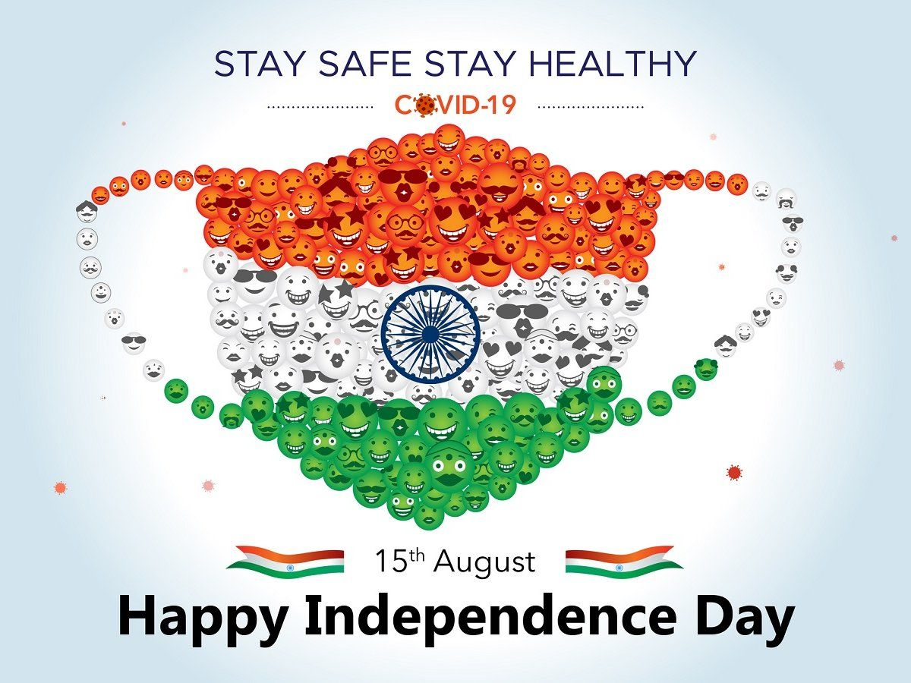

Abhijit

Independence Day is celebrated annually on 15 August as a national holiday in
India commemorating the nation's independence from the United Kingdom on 15 August 1947,
the day when the provisions of the 1947 Indian Independence Act,
which transferred legislative sovereignty to the Indian Constituent Assembly, came into effect.
India retained King George VI as head of state until its transition to a full republic,
when the nation adopted the Constitution of India on 26 January 1950 (celebrated as Indian Republic Day)
and replaced the dominion prefix, Dominion of India,
with the enactment of the sovereign law Constitution of India.
India attained independence following the Independence Movement noted for largely non-violent
resistance and civil disobedience.
Independence coincided with the partition of India,
in which British India was divided along religious lines into the Dominions
of India and Pakistan; the partition was accompanied by violent riots and mass casualties,
and the displacement of nearly 15 million people due to religious violence.
On 15 August 1947, the first Prime Minister of India, Jawaharlal Nehru raised the
Indian national flag above the Lahori Gate of the Red Fort in Delhi. On each subsequent
Independence Day, the incumbent Prime Minister customarily raises the flag and gives
an address to the nation.[1] The entire event is broadcast by Doordarshan,
India's national broadcaster, and usually begins with the shehnai music of Ustad Bismillah Khan.
Independence Day is observed throughout India with flag-hoisting ceremonies,
parades and cultural events. It is a national holiday.[2][3][4]